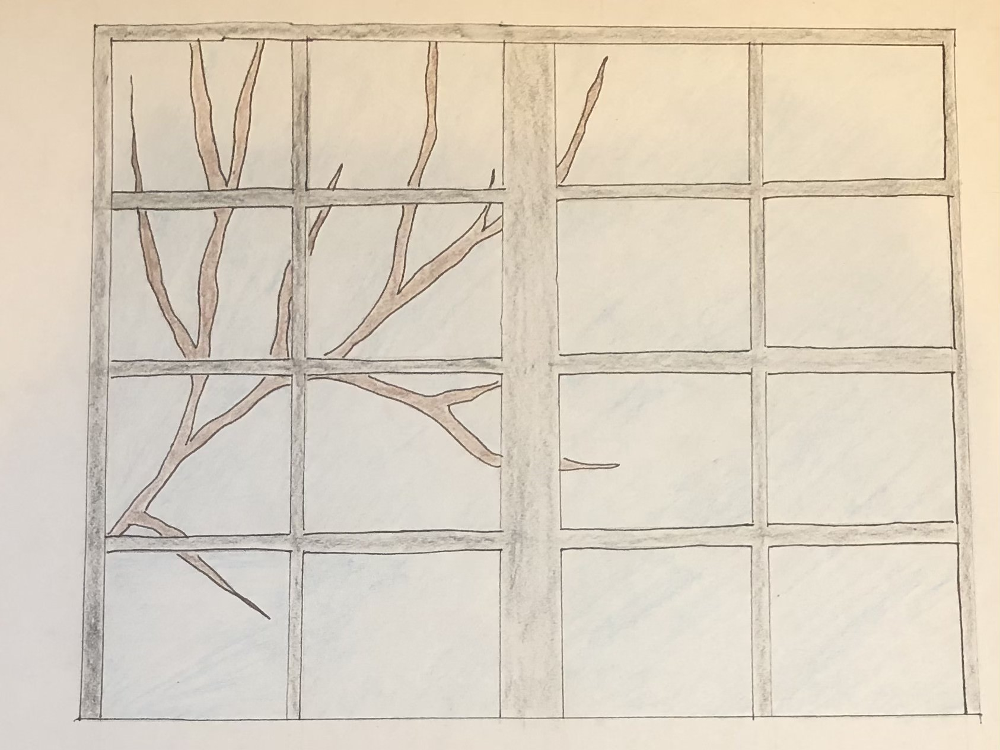
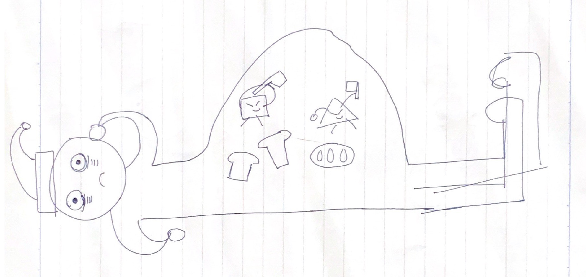
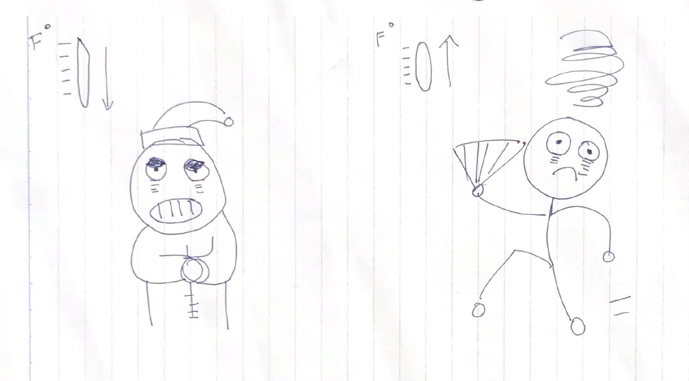
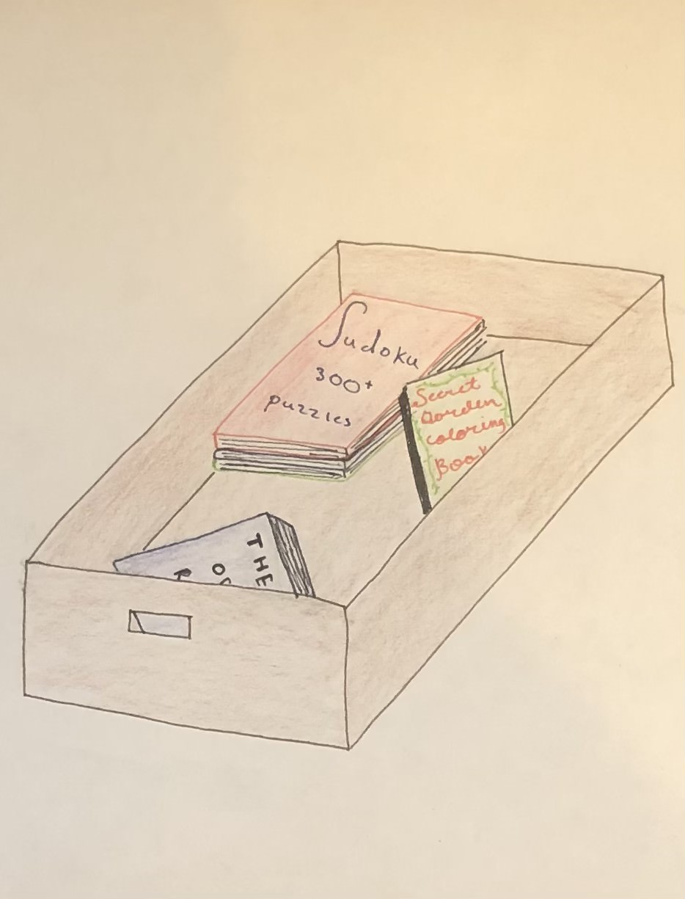
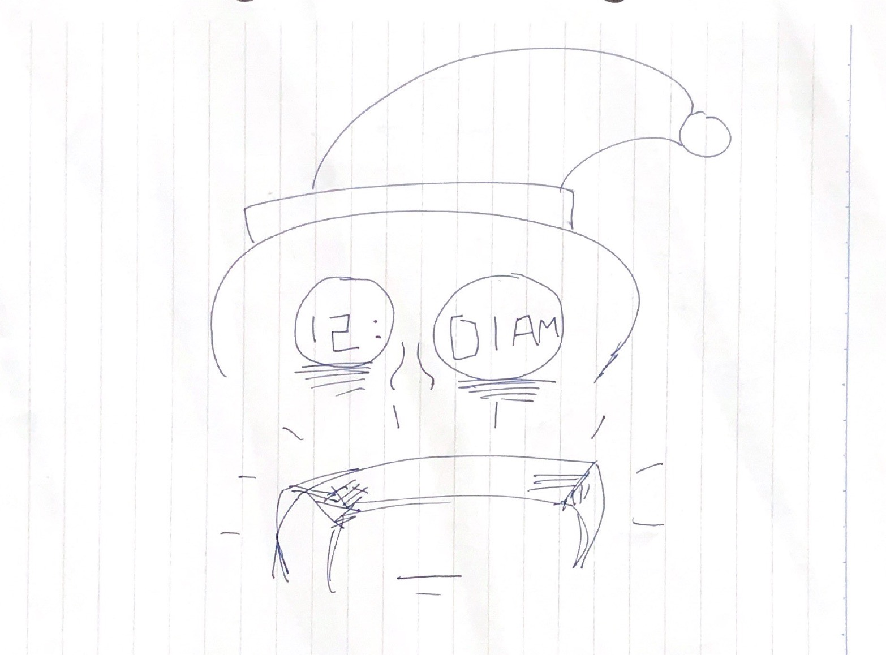
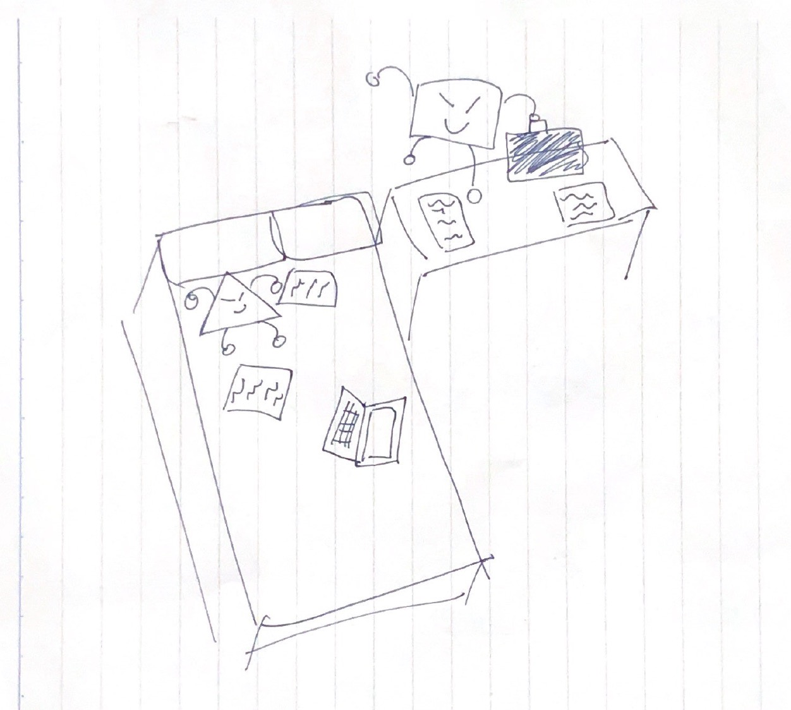
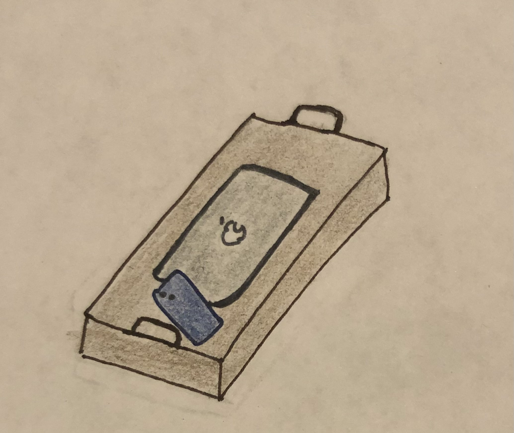

College students are having an increasingly difficult time sleeping right. Here are 7 science backed tips that can help.
Light is the most important zeitgeber for training one’s circadian rhythm. It provides our body with cues for when we should be awake and when we should sleep. While light exposure alone may not be enough to stop insomnia, we feel it is important to encourage a healthy sleep rhythm. As such, we included a window in our dorm design. However, we also recommend having curtains, especially for students in urban areas with a lot of artificial light. Exposure to light from street lamps or passing cars at night could potentially disturb one’s sleep!
Food helps give energy to the body. However, certain types of foods are more difficult to digest and thus impact our sleep. For example, in the picture, we can see a person trying to sleep but his body is slow to break down all the bread he digested in his stomach. In this picture, the square and triangle represent the body’s digestive system. Based on Dr. Schneeberg's recommendations, we suggest having a light snack available in your dorm for before bed or for times when you wake up hungry and have difficulty falling back asleep. [Source]
A study we read suggested that rising heat temperatures actually increase wakefulness and impact a person’s REM and sleep stages. While colder temperatures do not impact sleep stages, it can impact thermoregulation. In the picture, we can see that the person has his eyes half closed to show that the cold is helping him fall asleep but it could have negative effects on his other bodily functions. On the right side, the person is walking in an exaggerated movement because the heat is making him more active. We also know from personal experience that it can be hard to fall asleep if you are bothered or worried by the temperature of your room. Given this knowledge and the study results described above, our ideal dorm design includes a heater and fan so you can adjust the temperature as needed to get the best sleep possible!
From our own research and the class lecture on insomnia, we learned that people with insomnia can become very stressed about their inability to sleep. This stress makes it hard to fall asleep, leading to a never ending cycle of stress and sleep deprivation. Our ideal dorm design has a ‘bedtime basket’ with easy and enjoyable activities like crossword puzzles, books, and podcasts. These activities should serve as a welcome distraction from nighttime anxiety for people with insomnia or people who are struggling to fall asleep; however, our hope is that the activities are not cognitively demanding enough to prevent someone from eventually getting the rest they need!
People who have a clock or another timekeeping device (like a phone) within reach at night may be tempted to continually watch the clock if they are having trouble sleeping. Clock-watchers may become more stressed about the time they are wasting trying to fall asleep, which in turn makes sleeping more difficult. Studies have suggested that clock-watching, also known as time monitoring behavior, can perpetuate symptoms in insomnia patients. For this reason, CBT-I practitioners like Dr. Schneeberg may recommend that insomnia patients remove clocks from their sight and reach at bedtime.
In this picture, the square and triangle represent how work and sleep become interconnected if they are not separated. The square and triangle are dragging papers and computers over to the bed. This is exactly what happens when students do not have a designated workspace: they begin to associate their bed with stressful assignments and studying rather than with sleeping and relaxation. This can cause students to have difficulty falling asleep and exacerbate existing sleep disorders, like insomnia. The vast majority of students already have school-provided desks in their dorm room. To encourage students to use this space (rather than their bed) for doing homework, we suggest that students organize and decorate their desk area in a way that is pleasing to them!
There are two reasons behind this design choice. First, phones and computers often have very visible clock features, so keeping devices out of reach and away from the bed can prevent people from clock-watching when they can’t sleep. Second, it is well documented that using technology before bed is associated with poorer sleep quality (we found one study that specifically found this result among college students!). Our hope is that students will put their devices in this designated area before starting their nighttime routine and leave them there until the next morning, thus preventing technology-related sleep disruptions!
Art by Linh and Maggie
Writing by Carly
Website by Ron
All sources are linked or mentioned in the text.